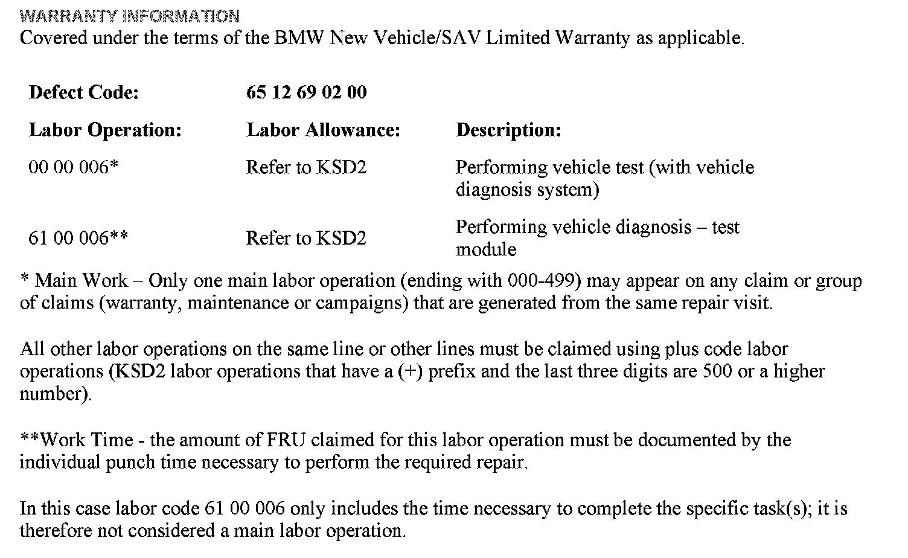

Audio Sys.- Intermittent No Audio Output After Start-Up
SI B65 02 11Audio, Navigation, Monitors, Alarms SRS
February 2011
Technical Service
SUBJECT
Audio Is Intermittently Inoperative
MODEL
E82, E88 (1 Series)
E90, E91, E92, E93 (3 Series)
Vehicles produced from 09/2007 with option 663 (Radio BMW Professional) and option 676 (HIFI Loudspeaker System)
SITUATION
Intermittently there is no audio output after vehicle start-up. The radio is working.
^ AM/FM radio station, CD or AUX is displayed correctly
^ Backlight is on
^ All buttons on the radio are working
Switching the audio mode and/or the radio off/on or performing any other selection will not resume audio functionality.
Only after a sleep mode cycle will the radio operate correctly again.
CAUSE
Under investigation
CORRECTION
Do not replace parts!
Try to reproduce the complaint while the customer is present.
If the complaint cannot be reproduced, do not perform any further repair attempt. Explain to the customer that this can be caused by a corrupted signal inside the radio during start-up.
Only if the complaint can be reproduced multiple times, perform a vehicle test using ISTA (follow test modules if outlined by ISTA) and submit a PuMA case including answers to the following questions:
^ Which mode (AM/PM, CD, AUX-In, iPod/iPhone) is the radio in?
^ Can the modes be changed?
^ Can the audio be restored? If so, how?
^ Are external components (radar detector, external NAV system, etc.) connected?
^ Are phones paired to the vehicle via Bluetooth?
^ How many phones are paired?
^ Is the customer getting into the vehicle with an active phone call via Bluetooth while it is happening?
^ Is an iPod/iPhone connected to the vehicle?
^ Which iPod/iPhone is being used?
^ Which software is installed on the iPod/iPhone?
^ Is the iPod/iPhone left in the vehicle and connected all the time?

WARRANTY INFORMATION